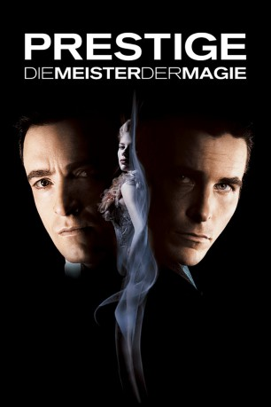

Auszeichnungen: für 2 Oscars nominiert
 gesehen am 20.11.2015
gesehen am 20.11.2015Alternativ: The Prestige
Auszeichnungen: für 2 Oscars nominiert gesehen am 20.11.2015
 
 IMDB-Wertung: 8.5 / 10
IMDB-Wertung: 8.5 / 10  IMDB-TOP-Platzierung: 49
IMDB-TOP-Platzierung: 49  Metascore:
Metascore: 
Im viktorianischen Zeitalter, zur Zeit der Jahrhundertwende, lernen sich die konkurrierenden Magier Robert Angier und Alfred Borden kennen. Aus freundschaftlicher, jugendlicher Konkurrenz erwächst jedoch bald etwas wesentlich Schlimmeres, denn nicht nur neidet jeder dem Anderen das Talent, Roberts Frau stirbt auch bei einem von Alfreds risikobewehrten Tricks. Über Jahre belauern und bekämpfen sie sich gegenseitig und reißen damit ihr gesamtes Umfeld in die Tiefe, nur um hinter die Tricks des jeweils anderen zu kommen. Dabei schrecken die beiden am Ende nicht einmal vor Mord zurück, denn das "Prestige", der unglaubliche letzte Teil eines perfekten Zaubertricks, ist jeden Einsatz wert...
Jahr: 2006
Dauer: 130 Minuten
FSK: 12
Land: USA Studio: Buena Vista PicturesTonspuren: DD5.1 - ,
Untertitel: Englisch,
Auflösung: 1080p (1920×816) Größe: 4945 MB
Genre: Drama, Mystery, Sci-Fi, Thriller
Regisseur:  Christopher Nolan
Christopher Nolan
Drehbuch: Jonathan Nolan, Christopher Nolan, Christopher Priest
Soundtrack: David Julyan
Darsteller:
 Hugh Jackman als Robert Angier
Hugh Jackman als Robert Angier Christian Bale als Alfred Borden
Christian Bale als Alfred Borden Michael Caine als Cutter
Michael Caine als Cutter Piper Perabo als Julia McCullough
Piper Perabo als Julia McCullough Rebecca Hall als Sarah Borden
Rebecca Hall als Sarah Borden Scarlett Johansson als Olivia Wenscombe
Scarlett Johansson als Olivia Wenscombe David Bowie als Nikola Tesla
David Bowie als Nikola Tesla Andy Serkis als Alley
Andy Serkis als Alley Jim Piddock als Prosecutor
Jim Piddock als Prosecutor Christopher Neame als Defender
Christopher Neame als Defender Mark Ryan als Captain
Mark Ryan als Captain Roger Rees als Owens
Roger Rees als Owens Jamie Harris als Sullen Warder
Jamie Harris als Sullen Warder Ron Perkins als Hotel Manager
Ron Perkins als Hotel Manager Ricky Jay als Milton
Ricky Jay als Milton Chao Li Chi als Chung Ling Soo
Chao Li Chi als Chung Ling Soo William Morgan Sheppard als Merrit
William Morgan Sheppard als Merrit Ezra Buzzington als Ticket Hawker
Ezra Buzzington als Ticket Hawker James Lancaster als Moderator
James Lancaster als Moderator Russ Fega als Man in Hotel
Russ Fega als Man in Hotel Edward Hibbert als Ackerman
Edward Hibbert als Ackerman Enn Reitel als Workman 1
Enn Reitel als Workman 1 Gary Sievers als Stagehand , uncredited
Gary Sievers als Stagehand , uncreditedDatei: X:\2006(N-Z)\Prestige - Die Meister der Magie (2006, FSK12, 1920x816).mkv seit 14.02.2015
Festplatte: HD 2005(G-Z)-2006(A-Z)
 Es gibt insgesamt 62 Filme in der Gruppe '2006(N-Z)'
Es gibt insgesamt 62 Filme in der Gruppe '2006(N-Z)'